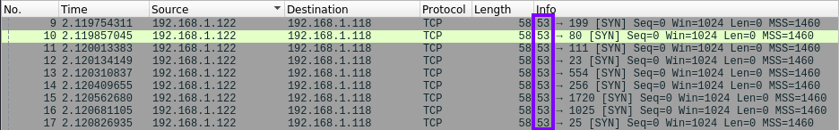

--source-port [port]
Spoof source port number
This option change our source port in order to bypass poorly configured firewalls/IDS that allow
communications from specific ports.
Ports that the Admins can allow:
• 53 (DNS replies) → allowed because
firewall can block UDP DNS replies from external servers can no longer enter the network
• 20 (active FTP) →
allowed because firewall can block remote server connection back to the client to transfer the requested
file
nmap
(--source-port <portnumber>; -g <portnumber> )
nmap -sS -Pn -n --disable-arp-ping --source-port 53 [target]
or
nmap -sS -Pn -n --disable-arp-ping -g 20 [target]

hping3
hping3 -S -s 53 --scan known 192.168.1.118
Bibliography:
https://nmap.org/book/man-bypass-firewalls-ids.html